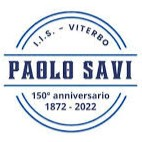

Manuel Falconetti |
Summary
7+ years of experience in the e-commerce operations industry, with 3 years in a program management role.
Skills: Strong problem-solving and process improvement skills. Proficient in data analysis and reporting business metrics. Experienced in interviewing, training, mentoring, and collaborating with cross-functional teams.
Career Highlights: Consistently demonstrated excellence, resulting in 2 promotions within Amazon's catalog operations organization. Developed and implemented process improvements, fostering knowledge-sharing and streamlining operations. Efficiently supported the remote launch of a new team in London during the pandemic.
Experience
|
|
Amazon |
Program ManagerLondon, United Kingdom (Oct 2021 - Present)
Responsibilities: Planning, executing, and delivering projects by applying project management best practices to improve efficiency, identify roadblocks, and resolve issues. Defining key metrics and creating mechanisms to track and report them to leadership, business analysts and engineering stakeholders (main platform used: Excel, Quip and QuickSight Dashboards). Leading effective meetings, creating clear documentation, and managing project communications, fostering collaboration and alignment. Participating in the interview process and mentoring team members. Impact: Drove process improvement ideas generation for a team of ~50 employees, resulting in an efficiency gain of 2.45 FTE (Full-Time Employees) in 2022 and 1.99 FTE in 2023. Led a cross-team project for the creation of a new internal XWiki website, serving as a central repository of information for the entire Catalog Support Operations organization, successfully launched in November 2022. Mentored team members, contributing to the professional growth of 9 colleagues into the next job level. Performed 55 interviews for Catalog Specialist role for Italian, Dutch and Swedish language speakers. Catalog Specialist II
London, United Kingdom (Nov 2020 - Oct 2021)
Bratislava, Slovakia (Dec 2018 - Oct 2020) Responsibilities: Served as a Subject Matter Expert, accountable for team productivity, quality, and metrics goals. Executed tasks independently, analyzing data to identify gaps and recommend solutions. Provided reports to operations managers and stakeholders at the process level. Drove improvement initiatives to enhance metric performance within processes at the site level. Mentored and coached associates, contributing to their professional growth. Relocated to London in November 2020 to support the launch of a new team and assume program management responsibilities. Catalog Specialist IBratislava, Slovakia (Mar 2017 - Dec 2018)
Responsibilities: Review Amazon catalog for content quality based on pre-defined guidelines. Make logical decisions while performing audit tasks even when information is ambiguous. Use authoritative sources/external websites to validate catalog data when needed. Thoroughly check product details to ensure accuracy and completeness of the data. Provide feedback to streamline existing processes and help the team achieve more consistent results with high quality. |
|
|
|
University of Pisa |
Restoration, cataloguing and refit of the historical herpetology collectionPisa, Italy (Dec 2015 - Sep 2016)
Responsibilities: Restored, catalogued and refitted the historical herpetology collection of the University of Pisa. The collection was composed of 2000+ specimens, including reptiles, amphibians and preserved tissues. The project aimed to preserve the collection for future generations and make it accessible to students and researchers. |
Education
|
|
University of Pisa |
Bachelor Degree: Natural and Environmental SciencesPisa, Italy (2009 - 2015)
|
|
|  |
Commercial Institute "Paolo Savi" |
Highschool Diploma: Accounting and Computer ScienceViterbo, Italy (2004 - 2009)
|
Languages
| Italian | Native | |
| English | C1 |
Skills
Program Management • Reporting & Analysis • Project Communications • Mentoring • Team Leadership • Data Analysis • Microsoft Excel • Strategic Planning • Research Skills